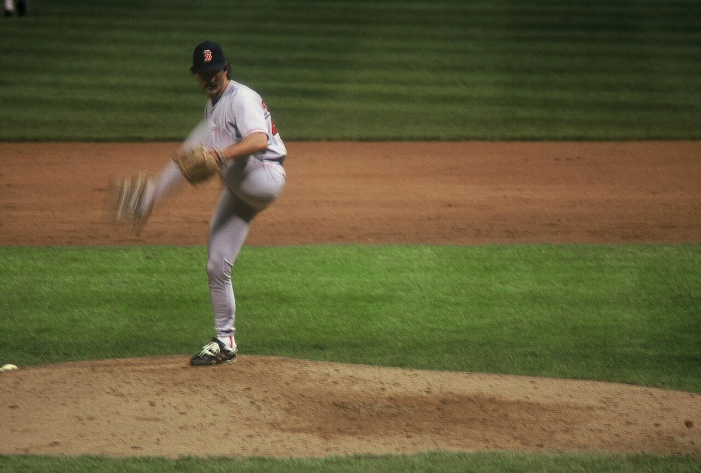

Dennis Eckersley
An Oakland born, Fremont raised starter who came home sober, took the ball in the ninth, and changed how the game ends.
The Dennis Eckersley Story
Dennis Eckersley was born in Oakland on October 3, 1954, the middle kid of Wallace and Bernice Eckersley, and he grew up a few freeway exits down in Fremont, where he starred at Washington High. Cleveland took him in the third round of the 1972 draft. Three days after graduation, at 17, he was pitching for Reno in the California League.
He was in the big leagues by 1975 at 20, and in his first start, on May 25, he shut out the three time defending champion A's on three hits. He won his next start too, in Oakland, in front of family and friends. He went 13 and 7 with a 2.60 ERA and was The Sporting News AL Rookie Pitcher of the Year. The leg kick he copied from his boyhood idol Juan Marichal, a Giant, came with him.
On May 30, 1977, he no hit the Angels at Cleveland, striking out 12 and getting Gil Flores, who'd been stalling, to swing at sliders for the last out. With his next start he ran his streak of hitless innings to 22 and a third, two outs shy of Cy Young's record. He made his first All Star team that summer.
Cleveland traded him to Boston in March 1978 and he went 20 and 8 for a Red Sox team that took the Yankees to a one game playoff. He won 17 more in 1979. Then the arm started to hurt, the back and shoulder followed, and the home runs piled up. Boston dealt him to the Cubs for Bill Buckner in May 1984, and he helped them win the NL East before the Padres knocked him out in the NLCS.
The hardest part of his story didn't happen on a mound. Eckersley had been drinking on and off for years, and after a miserable 1986 he watched a videotape of how he acted on a binge, shot over the holidays, in front of his daughter. He checked himself into rehab. He's been sober ever since.
On April 3, 1987, the Cubs traded him to Oakland. He was coming home, and nobody really knew what he'd be. Tony La Russa put him in the bullpen, and when Jay Howell's arm acted up, Eck got the ninth. He and Howell each saved 16 that year. Pitching coach Dave Duncan had seen something, and that winter Howell was the one traded.
What La Russa and Duncan built around him became the modern closer: one inning, the ninth, every night. In 1988 he led the majors with 45 saves, saved all four games of the ALCS sweep of Boston and was the series MVP. Then came Game 1 of the World Series at Dodger Stadium, two outs in the ninth, a walk to Mike Davis, and Kirk Gibson's home run. Eck has never hidden from it.
He answered with two of the best seasons a reliever has ever had. In 1989 he posted a 1.56 ERA and walked three batters in 57 and two thirds innings. He struck out Junior Felix to end the ALCS in Toronto and he got the last out of the World Series at Candlestick, taking the flip from Tony Phillips on Brett Butler's grounder. In 1990 he saved 48 with a 0.61 ERA, allowing five earned runs and four walks all year.
In 1992 he saved 51 games with a 1.91 ERA, struck out 93 and walked 11, and the writers gave him both the Cy Young and the MVP. That October Roberto Alomar took him deep in Game 4 of the ALCS, and Toronto won the series. He closed for Oakland through 1995, finishing with 320 saves in green and gold.
La Russa left for St. Louis and Eck followed in a February 1996 trade. He pitched two years for the Cardinals and one more for Boston, and retired after 1998 with 197 wins, 100 complete games, 390 saves and a record 1,071 games pitched. He's the only pitcher with 100 saves and 100 complete games.
He went into Cooperstown on July 25, 2004, and used his speech to thank La Russa and Duncan. The A's retired his number 43 on August 13, 2005, Washington High named its field after him in 2007, and he was in the first class of the A's Hall of Fame in 2018. A whole generation in New England knows him as Honest Eck from the Red Sox broadcasts. Around here he's still the guy in the ninth.
What He Meant to Us
Eck is ours in a way people outside the Bay forget. Born in Oakland. Grew up in Fremont. Went all the way around the league, Cleveland, Boston, Chicago, and then came home and became the best reliever anybody had ever seen. You don't get that story very often, and you almost never get it with the guy getting sober right before it starts.
The hair, the mustache, that big leg kick. When the bullpen door opened at the Coliseum and number 43 came jogging in, the game was over. That 1990 season, a 0.61 ERA, five earned runs all year, still doesn't look real when you read it.
He gave up the Gibson homer. He gave up the Alomar homer. He's talked about both of them for decades without ducking, and I respect that more than almost anything. The final out of the 1989 World Series came at Candlestick, Butler grounding to second and Eck covering first, and for a lot of East Bay kids that's the happiest baseball memory we'll ever have.
He changed the game, too, and not in a small way. Every team now saves its best reliever for the ninth because of what La Russa and Duncan figured out with Eck in Oakland. That started here.
In Pictures

Why He Was Clutch
Closing is the job where one mistake is all anybody remembers, and Eck chose to own that. In the 1988 ALCS he saved all four games of the sweep. The next October he saved the pennant clincher in Toronto by striking out Junior Felix, and then he got the last out of the World Series.
The control is what made him impossible. He walked three men in 1989, four in 1990. Goose Gossage said he could hit a gnat with a pitch. When there's no free pass coming, the hitter has to swing, and with Eck's slider that usually meant a weak ground ball or a strikeout.
He didn't always win the big one, and that's part of it. Gibson in 1988 and Alomar in 1992 were real. What separates him is he kept taking the ball the next night like it never happened, and through 1992 he was as good as any closer the game had seen.
Clutch Moments
- October 9, 1988
Four saves, four wins, a sweep
In Game 4 of the ALCS against Boston at the Coliseum, Eck came on in the ninth with a 4 to 1 lead, walked Spike Owen, then got Todd Benzinger, Rich Gedman and Jody Reed. It was his fourth save in four games and the A's were going to the World Series. He was named ALCS MVP.
- October 15, 1988
Gibson
Game 1 of the World Series at Dodger Stadium, Oakland up 4 to 3, two outs in the ninth. Eck walked pinch hitter Mike Davis and then Kirk Gibson, hobbling on a sore leg, hit a full count backdoor slider over the right field wall. "When he hit it, I just sank," Eck said. It belongs here because of what he did after.
- October 8, 1989
The pennant clincher in Toronto
Oakland led 4 to 2 going to the bottom of the ninth in Game 5 at SkyDome. Tony Fernandez singled, stole second and scored on a sacrifice fly to make it 4 to 3, and then Eck struck out Junior Felix to send the A's back to the World Series.
- October 28, 1989
The last out at Candlestick
In Game 4 of the Earthquake Series, Eck took the ball in the ninth with a 9 to 6 lead. Donell Nixon bunted out, Jose Uribe flied to Rickey in left, and Brett Butler grounded to Tony Phillips, who flipped to Eck covering first. The A's were world champions.
- October 6, 1990
Closing the door at Fenway
He finished off Game 1 of the 1990 ALCS at Fenway Park, getting Mike Greenwell to ground out after an Ellis Burks double. Oakland won 9 to 1 and swept the Red Sox again, the third straight pennant.
- September 21, 1992
Number 50
At Comiskey Park, protecting a 6 to 5 lead, Eck got Frank Thomas to pop out, struck out Shawn Jeter and retired Robin Ventura on a ground ball. It was his 50th save of the season on the way to 51, a Cy Young and an MVP.
The Highlights
What They Said About Eckersley
“His control is so good, I would be willing to put on the gear and catch any pitch he throws with my eyes closed”
“He has the ability to throw a strike any time he wants. Nobody else can do that. Nobody.”
“Eck always throws strikes, and he has the heart of a giant.”
“But at Oakland I changed jobs at precisely the right time, and I give the A's credit for that.”
“Eck's numbers are unbelievable. I don't know how, but he doesn't walk anybody.”
“I'm being inducted into the Hall of Fame in large part because of Tony La Russa and Dave Duncan.”
Career Stats
| Year | Team | W | L | ERA | G | GS | CG | SHO | SV | IP | H | ER | BB | SO | WHIP |
|---|---|---|---|---|---|---|---|---|---|---|---|---|---|---|---|
| 1975 | CLE | 13 | 7 | 2.60 | 34 | 24 | 6 | 2 | 2 | 186.2 | 147 | 54 | 90 | 152 | 1.27 |
| 1976 | CLE | 13 | 12 | 3.43 | 36 | 30 | 9 | 3 | 1 | 199.1 | 155 | 76 | 78 | 200 | 1.17 |
| 1977 | CLE | 14 | 13 | 3.53 | 33 | 33 | 12 | 3 | 0 | 247.1 | 214 | 97 | 54 | 191 | 1.08 |
| 1978 | BOS | 20 | 8 | 3.02 | 35 | 35 | 16 | 3 | 0 | 268.1 | 258 | 90 | 71 | 162 | 1.23 |
| 1979 | BOS | 17 | 10 | 2.99 | 33 | 33 | 17 | 2 | 0 | 246.2 | 234 | 82 | 59 | 150 | 1.19 |
| 1980 | BOS | 12 | 14 | 4.28 | 30 | 30 | 8 | 0 | 0 | 197.2 | 188 | 94 | 44 | 121 | 1.17 |
| 1981 | BOS | 9 | 8 | 4.27 | 23 | 23 | 8 | 2 | 0 | 154.0 | 160 | 73 | 35 | 79 | 1.27 |
| 1982 | BOS | 13 | 13 | 3.73 | 33 | 33 | 11 | 3 | 0 | 224.1 | 228 | 93 | 43 | 127 | 1.21 |
| 1983 | BOS | 9 | 13 | 5.61 | 28 | 28 | 2 | 0 | 0 | 176.1 | 223 | 110 | 39 | 77 | 1.49 |
| 1984 | BOS | 4 | 4 | 5.01 | 9 | 9 | 2 | 0 | 0 | 64.2 | 71 | 36 | 13 | 33 | 1.30 |
| 1984 | CHC | 10 | 8 | 3.03 | 24 | 24 | 2 | 0 | 0 | 160.1 | 152 | 54 | 36 | 81 | 1.17 |
| 1984 | TOT | 14 | 12 | 3.60 | 33 | 33 | 4 | 0 | 0 | 225.0 | 223 | 90 | 49 | 114 | 1.21 |
| 1985 | CHC | 11 | 7 | 3.08 | 25 | 25 | 6 | 2 | 0 | 169.1 | 145 | 58 | 19 | 117 | 0.97 |
| 1986 | CHC | 6 | 11 | 4.57 | 33 | 32 | 1 | 0 | 0 | 201.0 | 226 | 102 | 43 | 137 | 1.34 |
| 1987 | OAK | 6 | 8 | 3.03 | 54 | 2 | 0 | 0 | 16 | 115.2 | 99 | 39 | 17 | 113 | 1.00 |
| 1988 | OAK | 4 | 2 | 2.35 | 60 | 0 | 0 | 0 | 45 | 72.2 | 52 | 19 | 11 | 70 | 0.87 |
| 1989 | OAK | 4 | 0 | 1.56 | 51 | 0 | 0 | 0 | 33 | 57.2 | 32 | 10 | 3 | 55 | 0.61 |
| 1990 | OAK | 4 | 2 | 0.61 | 63 | 0 | 0 | 0 | 48 | 73.1 | 41 | 5 | 4 | 73 | 0.61 |
| 1991 | OAK | 5 | 4 | 2.96 | 67 | 0 | 0 | 0 | 43 | 76.0 | 60 | 25 | 9 | 87 | 0.91 |
| 1992 | OAK | 7 | 1 | 1.91 | 69 | 0 | 0 | 0 | 51 | 80.0 | 62 | 17 | 11 | 93 | 0.91 |
| 1993 | OAK | 2 | 4 | 4.16 | 64 | 0 | 0 | 0 | 36 | 67.0 | 67 | 31 | 13 | 80 | 1.19 |
| 1994 | OAK | 5 | 4 | 4.26 | 45 | 0 | 0 | 0 | 19 | 44.1 | 49 | 21 | 13 | 47 | 1.40 |
| 1995 | OAK | 4 | 6 | 4.83 | 52 | 0 | 0 | 0 | 29 | 50.1 | 53 | 27 | 11 | 40 | 1.27 |
| 1996 | STL | 0 | 6 | 3.30 | 63 | 0 | 0 | 0 | 30 | 60.0 | 65 | 22 | 6 | 49 | 1.18 |
| 1997 | STL | 1 | 5 | 3.91 | 57 | 0 | 0 | 0 | 36 | 53.0 | 49 | 23 | 8 | 45 | 1.08 |
| 1998 | BOS | 4 | 1 | 4.76 | 50 | 0 | 0 | 0 | 1 | 39.2 | 46 | 21 | 8 | 22 | 1.36 |
| Career | 197 | 171 | 3.50 | 1071 | 361 | 100 | 20 | 390 | 3285.2 | 3076 | 1279 | 738 | 2401 | 1.16 |
Regular season stats from the MLB Stats API. KCA is the Kansas City Athletics, the same franchise before its 1968 move to Oakland; TOT rows combine a season split between teams. Scroll the table sideways on a phone.
Postseason
| Year | Team | W | L | ERA | G | GS | CG | SHO | SV | IP | H | ER | BB | SO | WHIP |
|---|---|---|---|---|---|---|---|---|---|---|---|---|---|---|---|
| 1984 | CHC | 0 | 1 | 8.44 | 1 | 1 | 0 | 0 | 0 | 5.1 | 9 | 5 | 0 | 0 | 1.69 |
| 1988 | OAK | 0 | 1 | 2.35 | 6 | 0 | 0 | 0 | 4 | 7.2 | 3 | 2 | 3 | 7 | 0.78 |
| 1989 | OAK | 0 | 0 | 1.23 | 6 | 0 | 0 | 0 | 4 | 7.1 | 4 | 1 | 0 | 2 | 0.55 |
| 1990 | OAK | 0 | 1 | 1.93 | 5 | 0 | 0 | 0 | 2 | 4.2 | 5 | 1 | 0 | 4 | 1.07 |
| 1992 | OAK | 0 | 0 | 6.00 | 3 | 0 | 0 | 0 | 1 | 3.0 | 8 | 2 | 0 | 2 | 2.67 |
| 1996 | STL | 1 | 0 | 0.00 | 6 | 0 | 0 | 0 | 4 | 7.0 | 5 | 0 | 0 | 6 | 0.71 |
| 1998 | BOS | 0 | 0 | 9.00 | 1 | 0 | 0 | 0 | 0 | 1.0 | 1 | 1 | 0 | 1 | 1.00 |
| Career | 1 | 3 | 3.00 | 28 | 1 | 0 | 0 | 15 | 36.0 | 35 | 12 | 3 | 22 | 1.06 |
Dennis Eckersley: Fast Facts
What years was Dennis Eckersley with the Oakland Athletics?
Dennis Eckersley was with the Oakland Athletics from 1987 to 1995 as a relief pitcher.
What number did Dennis Eckersley wear?
Dennis Eckersley wore number 43.
What are Dennis Eckersley's signature numbers?
390 career saves; 320 saves with the A's; 0.61 ERA in 1990; 51 saves in 1992, his Cy Young and MVP year.
What were Dennis Eckersley's biggest honors?
1992 AL Cy Young Award; 1992 AL MVP; 1988 ALCS MVP; World Series champion (1989); 6x All Star (1977, 1982, 1988, 1990, 1991, 1992).
What are some of Eckersley's biggest moments?
Four saves, four wins, a sweep (October 9, 1988); Gibson (October 15, 1988); The pennant clincher in Toronto (October 8, 1989). Every one is in the Clutch Moments section above.